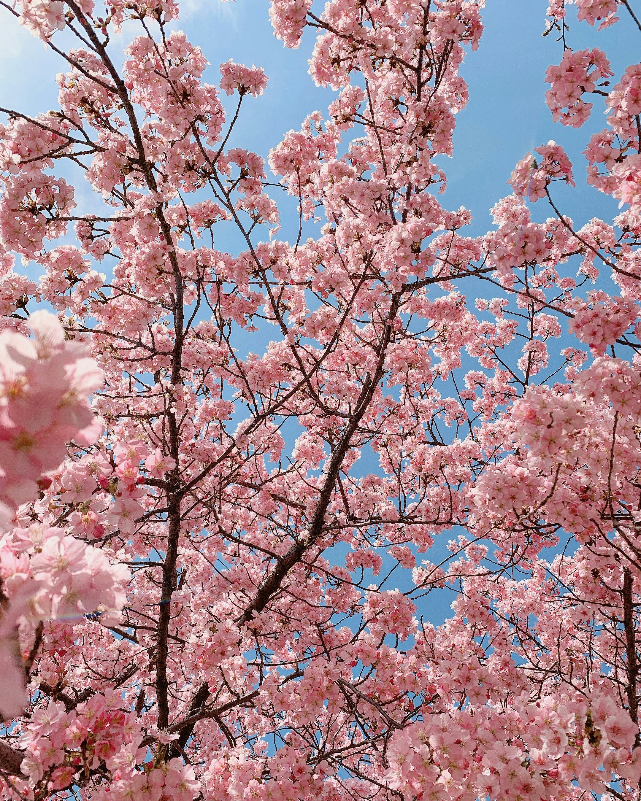
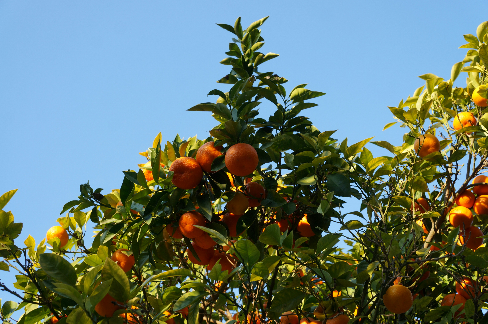

How to use this site
Each season has its ownpage with a small, curated collection of movies and TV shows that match the vibe of that time of year. Every title also has a suggested food or drink pairing to go along with it.
Follow the season that calls to you — something in bloom, something sunlit, something autumn-crisp, or something snowy — and build your perfect watch night.
Pick a season
-

Spring
Pastels, new beginnings, and sweet little romances that feel like rainy walks with flowers blooming.
-

Summer
Beach trips, long sunny days, road-trips, and coming-of-age stories made for warm nights.
-

Fall
Back to school, cozy mysteries, and movies that pair perfectly with coffee and sweaters.
-

Winter
Holidays, family time, snow days, and comfort rewatches best watched bundled up under a blanket.
A year of seasons
-
Spring · March – May
Temperatures start warming up, days slowly get longer, and everything begins to grow again. Flowers bloom, trees bud, and the world feels like it’s waking up after winter. -
Summer · June – August
The warmest months of the year, with the longest days and the most sunlight. It’s a season of clear skies, late sunsets, buzzing insects, and spending more time outside. -
Fall · September – November
Cooler air moves in, leaves change color, and daylight starts to fade earlier. It’s a transitional season where nature slows down and everything gets a little cozier. -
Winter · December – February
The coldest, darkest part of the year, with short days and quiet landscapes. Trees go bare, animals hibernate, and the season leans into stillness, snow, and staying warm.